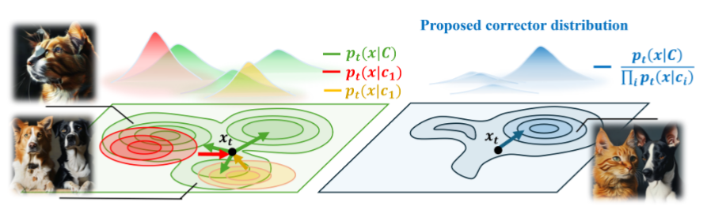

Literature Review: CO3: Contrasting Concepts Compose Better
This paper introduces CO3 (Concept Contrasting Corrector), a method designed to improve the fidelity of text-to-image diffusion models when handling multi-concept prompts (i.e., “a cat and a dog”). The authors identify a “mode overlap” phenomenon where diffusion models gravitate toward regions of the latent space dominated by a single strong concept, causing other concepts to vanish or merge. CO3 proposes a gradient-free, model-agnostic sampling strategy that steers the generation process away from these “single-concept” modes and toward a “pure” joint distribution.
Key Insights
-
The Mode Overlap Hypothesis The authors claims that semantic misalignment in multi-concept generation arises because the joint distribution $p(x|C)$ (e.g., “cat and dog”) frequently overlaps with the marginal distributions of individual concepts $p(x|c_i)$ (e.g., just “cat”). When the model samples from these overlapping regions, it effectively generates an image that satisfies one concept so strongly that it suppresses the other.
-
Composition via Tweedie Means Rather than composing noisy score functions (gradients of log-density) as done in previous work, this paper composes in the “Tweedie-denoised space.” Tweedie’s formula allows the model to estimate the clean image $\hat{x}_0$ from the current noisy state $x_t$. By averaging these estimated clean images weighted by concept importance, the authors derive a more mathematically consistent framework for composition that respects the underlying diffusion geometry better than linear score combination.
-
Closeness-Aware Weight Modulation To prevent one concept from dominating the generation process, CO3 dynamically adjusts weights during sampling. If the current latent state is statistically “too close” to the mode of a specific concept (e.g., the image looks too much like just a dog), the method assigns a stronger negative weight to that concept.

Figure: Illustration of the Mode Overlap Hypothesis. Standard diffusion (left) gets stuck in regions where the joint distribution overlaps with single concepts (red/orange). CO3 (right) steers the trajectory toward the "pure" joint mode (blue) by penalizing the single-concept overlaps.
Example
Consider the prompt: “A turtle and a mouse.”
- Standard Diffusion (SDXL): Might generate a turtle with mouse-like ears, or a turtle with a generic blob on top, because the “turtle” concept dominates the internal activations.
- CO3 Intervention:
- Steps 1-3 (Resampler): The model forces the initial noise layout to account for both “turtle” and “mouse” equally by canceling out the noise components that only favor one or the other.
- Steps 4-10 (Corrector): As the image forms, if the “turtle” features become too dominant, the Closeness-Aware Modulation detects this proximity. It applies negative guidance to the “turtle” vector, effectively suppressing it and allowing the “mouse” pixels to resolve clearly next to it.
- Result: A distinct turtle and a distinct mouse appear in the final image, rather than a hybrid or a single entity.
Ratings
Novelty: 4/5 The theoretical distinction between noise resampling ($\sum w=0$) and latent correction ($\sum w=1$) derived from Tweedie’s formula is a significant contribution. It provides a rigorous explanation for why previous score-composition methods often failed or produced artifacts.
Clarity: 2/5 The paper heavily relies on jargon (Tweedie means, DDIM mechanics) without intuitive explanations. The jump between the high-level goal (disentanglement) and the low-level implementation (weight-constrained linear combinations of denoised estimates) is jarring for readers not deeply familiar in diffusion theory.
Personal Perspective
While the disentanglement capabilities shown here are quantitatively impressive, the “plug-and-play” branding feels slightly overstated. The method relies on a complex interplay between a “Resampler” (for initialization) and a “Corrector” (for guidance), requiring specific scheduling thresholds ($T_c$, $T_r$) to work. This feels more like “Plug-and-Tune.”
Furthermore, I have concerns regarding the semantic implications of this “contrasting” approach. The method operates by penalizing overlap between the joint prompt $C$ and individual concepts $c_i$. If I request “an elephant with a bow,” a natural interpretation is an elephant holding or interacting with the bow. However, if CO3 aggressively penalizes the overlap between “elephant” and “bow” to prevent merging, it risks forcing them into separate, non-interacting entities (an elephant standing next to a floating bow). The paper does not sufficiently explore this tension between compositional separation and semantic interaction.
Finally, the reliance on undefined acronyms like DDIM (Denoising Diffusion Implicit Models) and concepts like “Tweedie mean” creates a high barrier to entry. For context, (to my understanding) the Tweedie mean in diffusion is essentially the model’s “best guess” of the final clean image ($x_0$) given the current noisy version ($x_t$) since the way diffusion model works is that guided by its other properties, it denoises an initial noisy version of the image. By averaging these guesses rather than the noise vectors, CO3 achieves more stable guidance, but the paper obscures this intuition behind dense notation.
Enjoy Reading This Article?
Here are some more articles you might like to read next: